On observational causality
Extending the evidence through target trial emulation
![]()
Prelude
Causal Questions
To optimally understand haemodiafiltration (HDF), we want to ask causal questions:
Does an intervention on the exposure lead to/cause/change the outcome?
Important
We assume that any change in the outcome is only due to our intervention
The Holy Grail of Causality
The Holy Grail: Randomisation
Ideally, we answer our causal questions using randomised controlled trials (RCTs)
- We randomise to whom (and to whom not) we give the intervention
- Because we do this randomly, we expect both groups to be practically the same 1
The Holy Grail: Alignment
Additionally, RCTs force us to,
- Include a participant when they are eligible
- Give our intervention at inclusion
- Start follow-up when we give our intervention
Note
This may seem straightforward, but that is only because an RCT forces us to align these moments.
The Expensive Holy Grail
Limitation 1: Trials are expensive
- CONVINCE cost ~6.5 million EUR2017
(~10 million EUR2026 or ~11.5 million USD2026) - Trials are as cost-efficient as possible
- This leads to a highly selected study population
- Thus, results are valid but difficult to generalise
The Highly Specific Holy Grail
Limitation 2: Trials only answer a few causal questions
For CONVINCE: Effect of high-dose HDF as compared to conventional guideline based HD (i.e. current standard of care) in terms of morbidity, mortality and HRQoL.
But what about:
- Different strategies of initiating HDF?
- HDF compared to other dialysis modalities?
- The underlying mechanisms?
- etc.
Observational Enrichment
Observational data
Limitations:
- For most interventions, there is confounding
- There is almost never a single clear baseline (no easy alignment)
Strengths:
- It is easier(/cheaper) to study a large population
- Data often represents routine clinical practice
- Results are better generalisable
Confounding
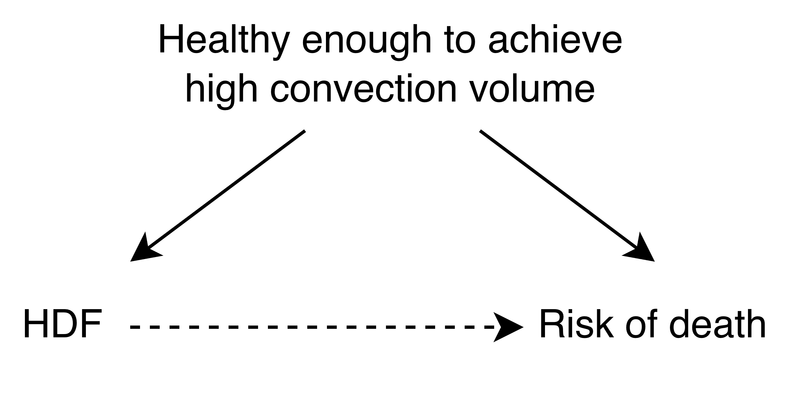
Confounding
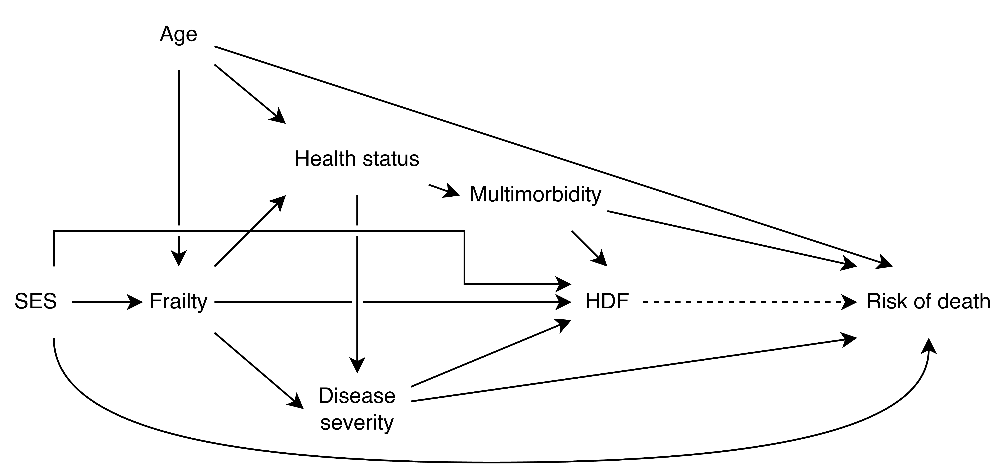
Alignment
Three key pillars:
- Eligibility
- Assignment of intervention (strategy)
- Start of follow-up
Misalignment
What if follow-up starts after assignment of the intervention (strategy)?
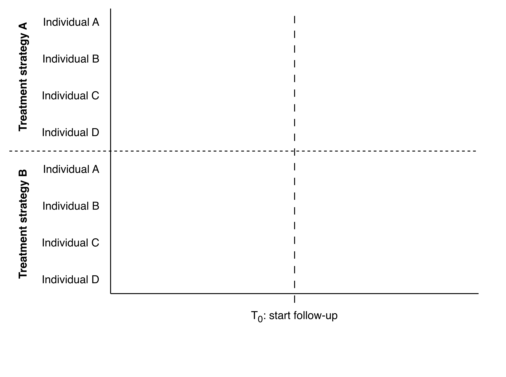
Misalignment
What if follow-up starts after assignment of the intervention (strategy)?
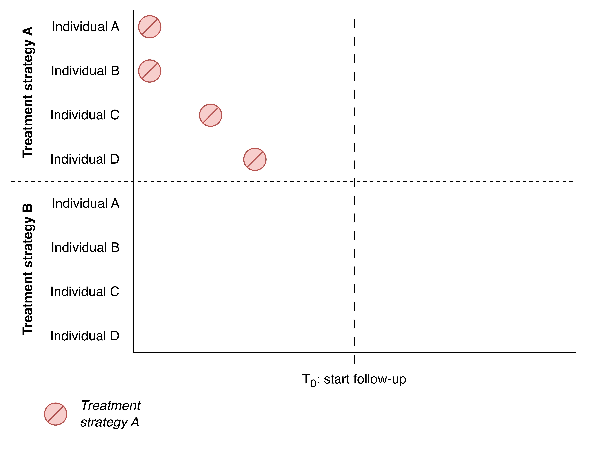
Misalignment
What if follow-up starts after assignment of the intervention (strategy)?
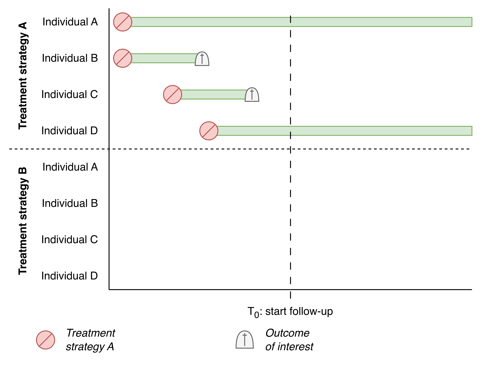
Misalignment
What if follow-up starts after assignment of the intervention (strategy)?
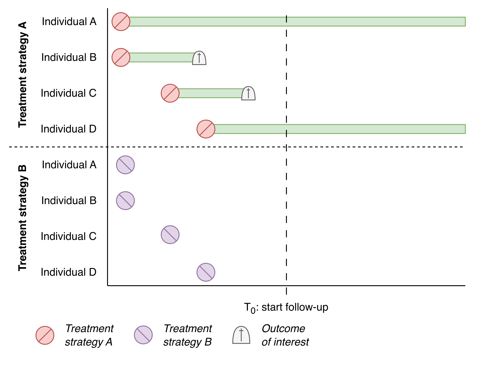
Misalignment
What if follow-up starts after assignment of the intervention (strategy)?
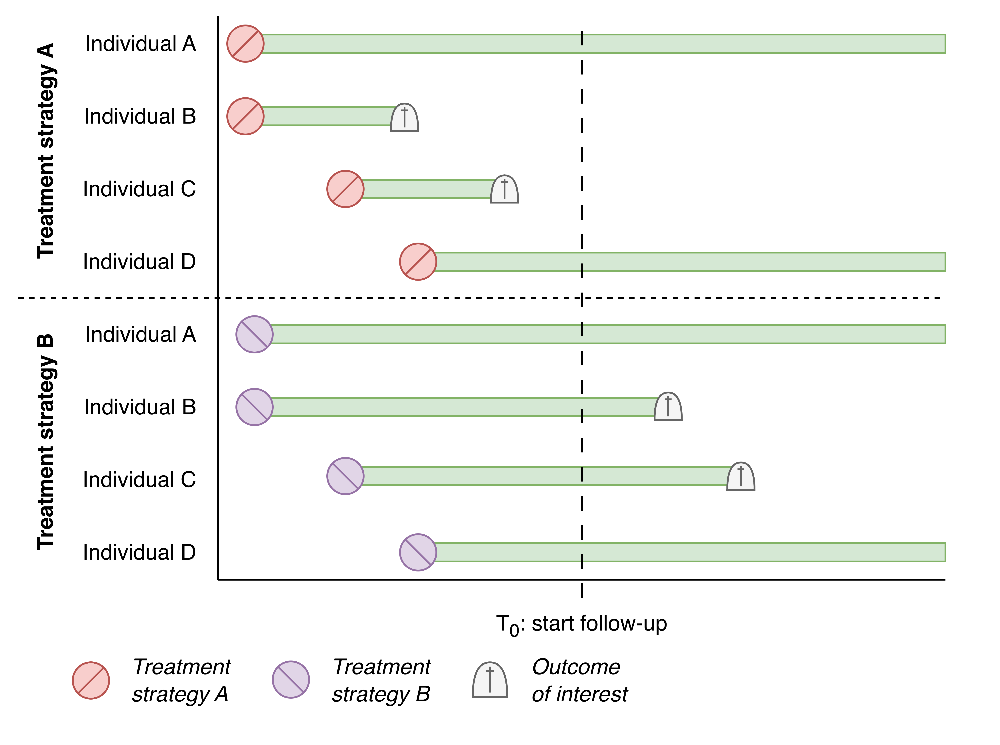
Misalignment
What if follow-up starts after assignment of the intervention (strategy)?
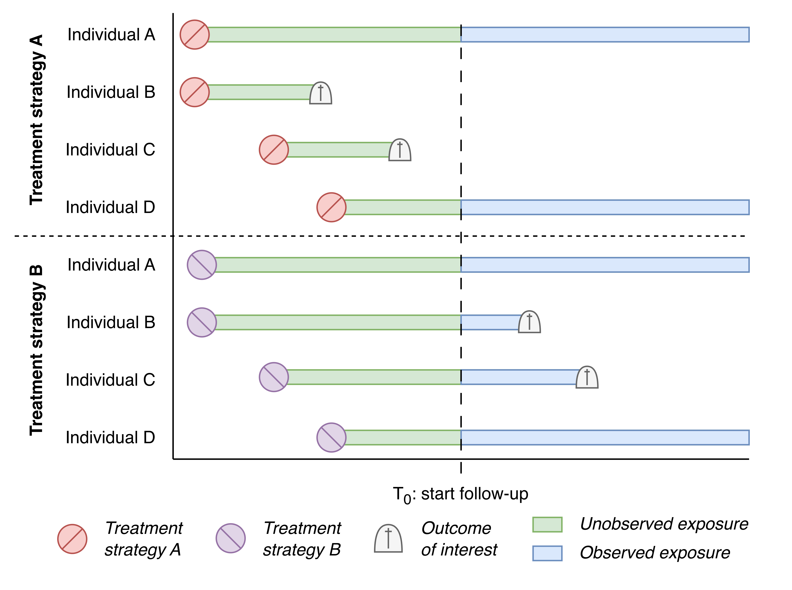
Misalignment
What if follow-up starts after assignment of the intervention (strategy)?
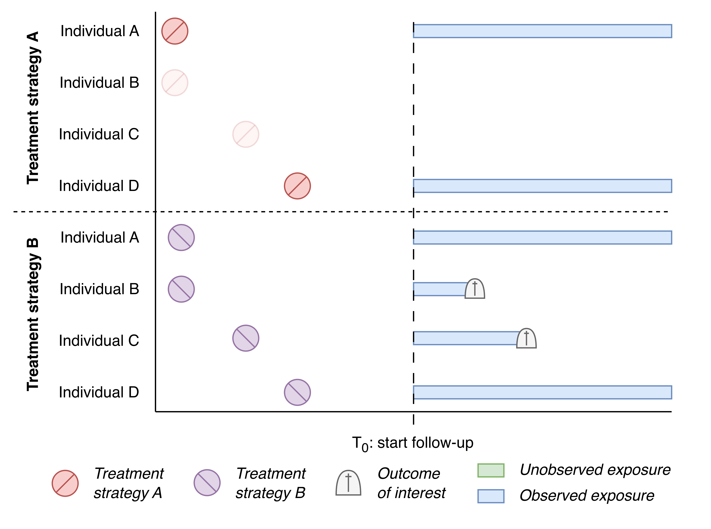
Misalignment
If follow-up starts after intervention assignment, you get:
Prevalent user bias
- A protective intervention helps individuals make it until inclusion
- A non-protective/harmful intervention loses those individuals
- This is called ‘depletion of susceptibles’
- As a result, the effect is underestimated
Misalignment
What if follow-up starts before assignment of the intervention (strategy)?
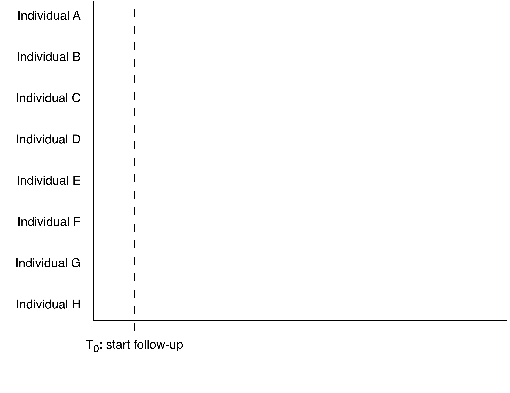
Misalignment
What if follow-up starts before assignment of the intervention (strategy)?
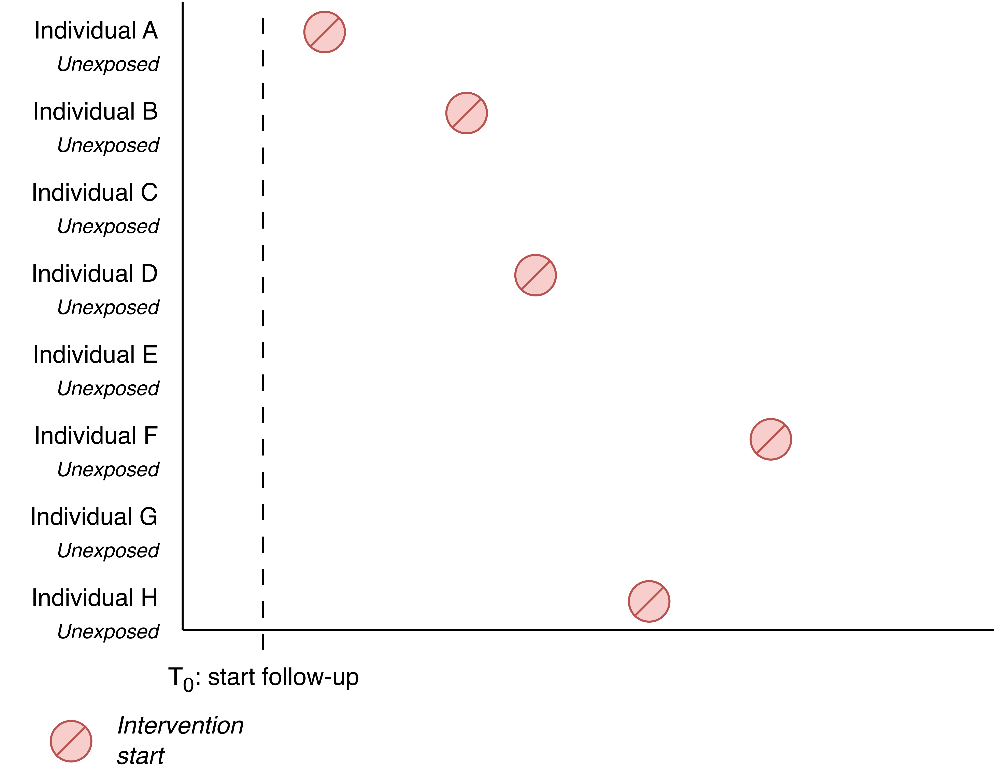
Misalignment
What if follow-up starts before assignment of the intervention (strategy)?
Misalignment
What if follow-up starts before assignment of the intervention (strategy)?
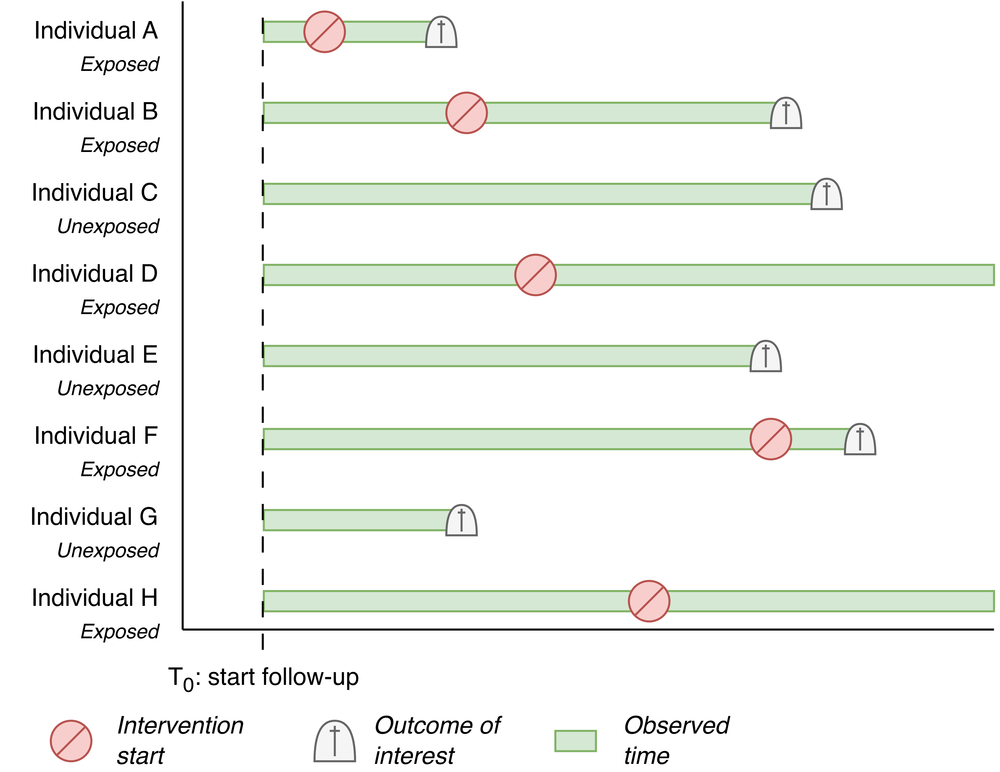
Misalignment
What if follow-up starts before assignment of the intervention (strategy)?
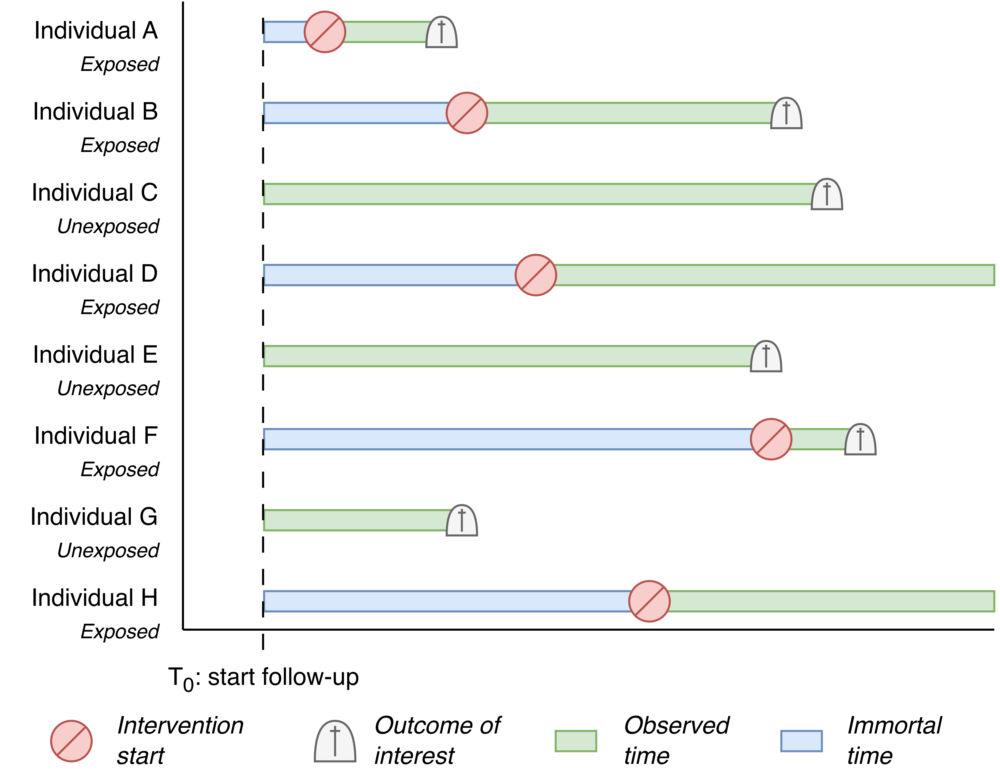
Misalignment
What if follow-up starts before assignment of the intervention (strategy)?
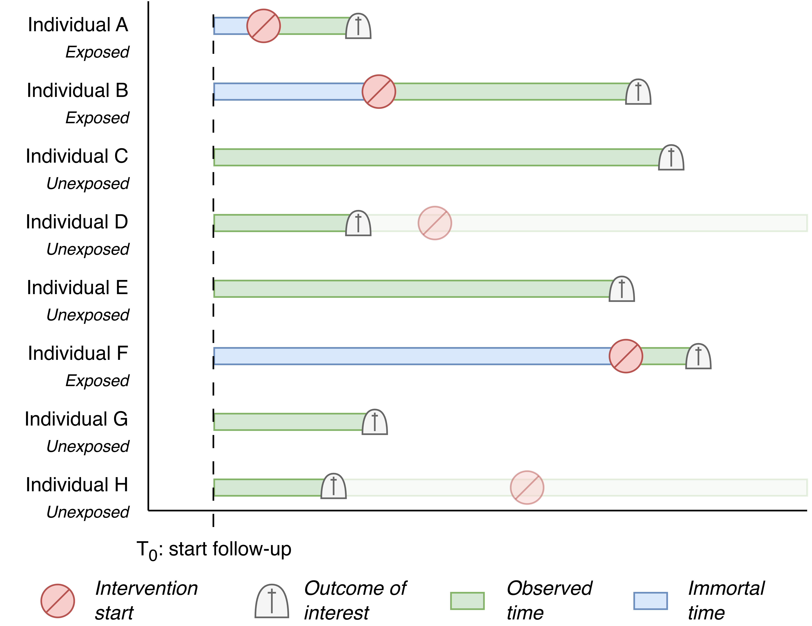
Misalignment
If follow-up starts before intervention assignment, you get:
Immortal time bias
- This occurs when you use future information
- You are immortal until you receive the intervention if you are part of the intervention arm (i.e. artificial survival advantage)
- Pre-intervention deaths are added to the control arm
- As a result, the effect is overestimated
Getting it Right
Target Trials
- To get it right, we think about trials
- We do not need to (be able to) perform this trial
- Instead, we borrow it’s design strengths
- These strengths are incorporated in our observational study
The Target Trial Emulation Framework
This approach is formalised in the target trial emulation (TTE) framework
- The TTE framework helps us design our target trial
- The TTE framework helps us emulate that trial using observational data
- The TTE framework forces to be explicit about these steps
Target Trial Emulation
| Target Trial Item | Elaboration |
|---|
Target Trial Emulation
| Target Trial Item | Elaboration |
|---|---|
| Eligibility criteria | Who gets to participate? |
Target Trial Emulation
| Target Trial Item | Elaboration |
|---|---|
| Eligibility criteria | Who gets to participate? |
| Treatment strategies | What interventions are you studying? |
Target Trial Emulation
| Target Trial Item | Elaboration |
|---|---|
| Eligibility criteria | Who gets to participate? |
| Treatment strategies | What interventions are you studying? |
| Treatment assignment | How do you decide who is assigned to which intervention? |
Target Trial Emulation
| Target Trial Item | Elaboration |
|---|---|
| Eligibility criteria | Who gets to participate? |
| Treatment strategies | What interventions are you studying? |
| Treatment assignment | How do you decide who is assigned to which intervention? |
| Outcome | What outcomes are you studying? |
Target Trial Emulation
| Target Trial Item | Elaboration |
|---|---|
| Eligibility criteria | Who gets to participate? |
| Treatment strategies | What interventions are you studying? |
| Treatment assignment | How do you decide who is assigned to which intervention? |
| Outcome | What outcomes are you studying? |
| Causal estimand | What, for who, with which measure, exactly, are you estimating? |
Target Trial Emulation
| Target Trial Item | Elaboration |
|---|---|
| Eligibility criteria | Who gets to participate? |
| Treatment strategies | What interventions are you studying? |
| Treatment assignment | How do you decide who is assigned to which intervention? |
| Outcome | What outcomes are you studying? |
| Causal estimand | What, for who, with which measure, exactly, are you estimating? |
| Start and end of follow-up | When do you start and when do you stop counting outcomes? |
Target Trial Emulation
| Target Trial Item | Elaboration |
|---|---|
| Eligibility criteria | Who gets to participate? |
| Treatment strategies | What interventions are you studying? |
| Treatment assignment | How do you decide who is assigned to which intervention? |
| Outcome | What outcomes are you studying? |
| Causal estimand | What, for who, with which measure, exactly, are you estimating? |
| Start and end of follow-up | When do you start and when do you stop counting outcomes? |
| Statistical analysis | What methodology is required for the first six items? |
Getting it Right: Confounding
- The item Treatment assignment helps us think about confounding
- The item Statistical analysis allows us to specify how we deal with confounding
- Methods to deal with confounding are not specific to target trial emulation
Getting it Right: Confounding
Getting it Right: (Mis)alignment
- The item Start and end of follow-up help us think about (mis)alignment of eligibility, intervention assignment, and start of follow-up
- This is captured in the study design we use, the components of which appear throughout the target trial emulation table
- Designs to ensure alignment are not specific to target trial emulation
Getting it Right: (Mis)alignment
A Worked Out Example
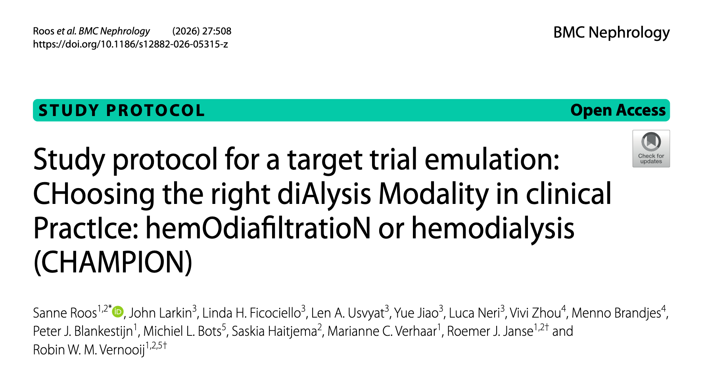
Final Thoughts
Target trial emulation is not a method, but a framework
As a framework, target trial emulation primarily helps you structure your thoughts
A study using the target trial emulation framework can be supercomplex, but als supersimple
Simple methods give copmlex answers; complex methods give simple answers
Thank you!
- Web: rjjanse.github.io
- Contact: r.j.janse-5@umcutrecht.nl
- Slides: rjjanse.github.io/talks